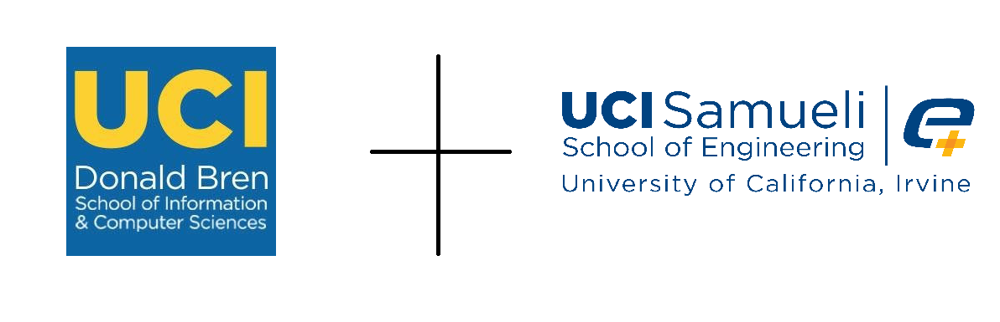
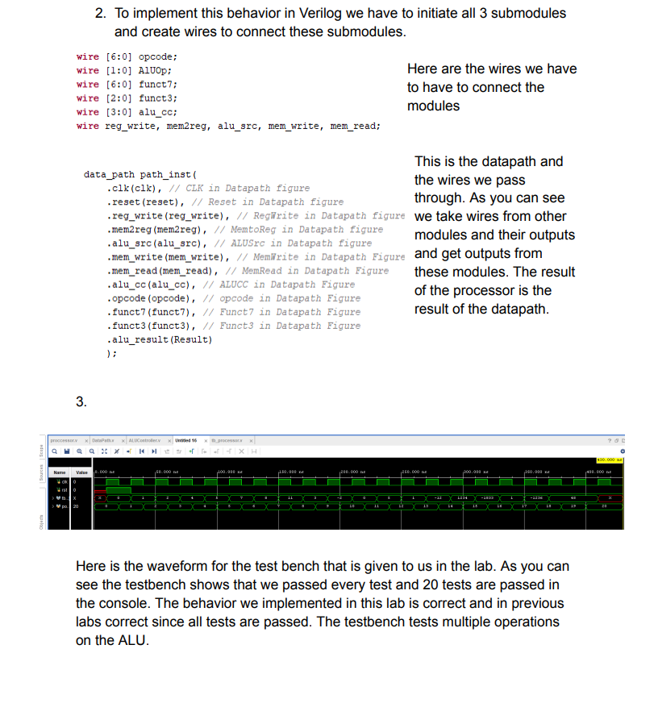
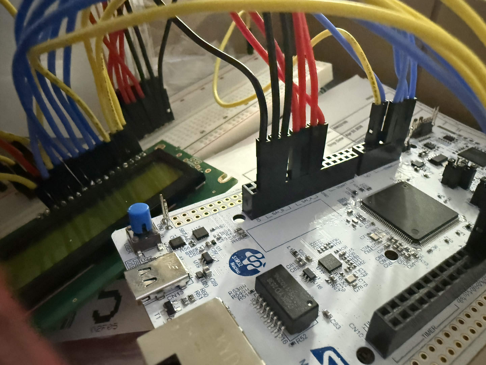
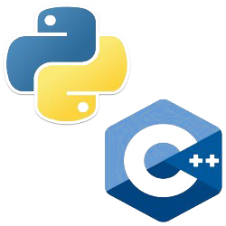

The coding languages I'm proficient in are Python and C++. I've done both tracks at UCI as well as additional classes like data structures and algorithms.
I have learned digital logic design, and have implemented processor architecture in Verilog
I've worked with microcontrollers and Rasberry Pi, specifically using C to program them

I was given the task of implementing a simple CPU in verliog and running simulations to ensure functionality.

I worked with the STM32 Nucleo Board, programming it in C to control various peripherals and implement embedded systems functionality. We worked used leds, timers, and finally implemented made a calculator that was able to display inputs and results.

I have worked on several projects using Python and C++, including data analysis and system programming tasks. Some include implementing a vector object in C++ and implementing graphing algorithms like kruskals and dijkstras. Learned more about data structures and algorithms, and object-oriented programming in Python.
